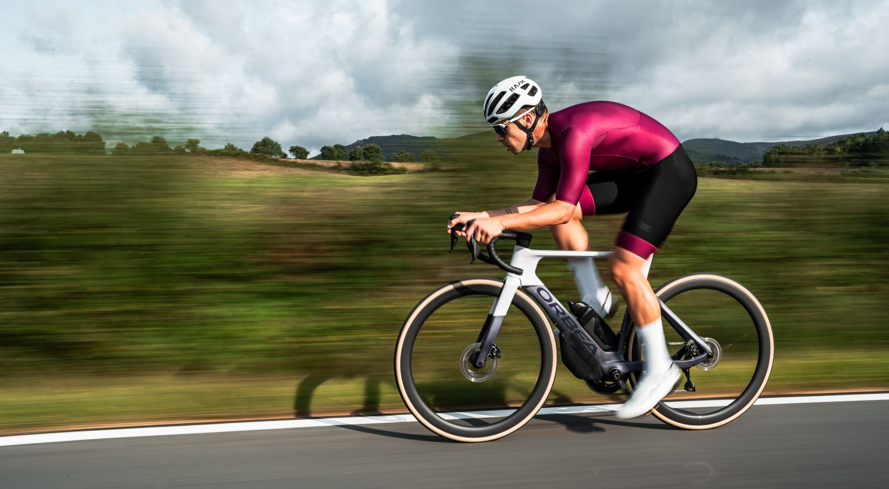

Using the data generated recoding both sales and revenue over a period of time ,with the help of PowerBI I was able to generate a dashboard showing detailed infomation as well as generate insights from the data provided by analysing trends and patterns.


We care was having an increase in employee Attrition rate, they wanted to know what factors could result in the increase in Attrition with the help of PowerBi the database provided showed diffrent insight as to why people are leaving the company like salary,working conditions etc.
VEE TECH requied a comprehensive report on their recuitment process.By implementing the star schema, i was able to optimise the data model, making it easier and faster to carry out your analysis effectively. This strategic step lead to valuable insights that improve VeeTech's recruitment process.

GoBikes is a bike rental company over a time frame they wanted to boost thier revenue and required analysis on the factors that affect the bike rentals like (holidays,workingdays,etc.)with the help of an accurate database in excel proper analysis was conducted to archive the company's objectives.

DHL is a famously known courier enterprise in most parts of the world.DHL seeks to improve their supllier performance in other to maximize customer satisfaction and profits.As a result the dataset of the supplier performace was provided in order to analyse and derive insights using an interactive dashboard on PowerBI